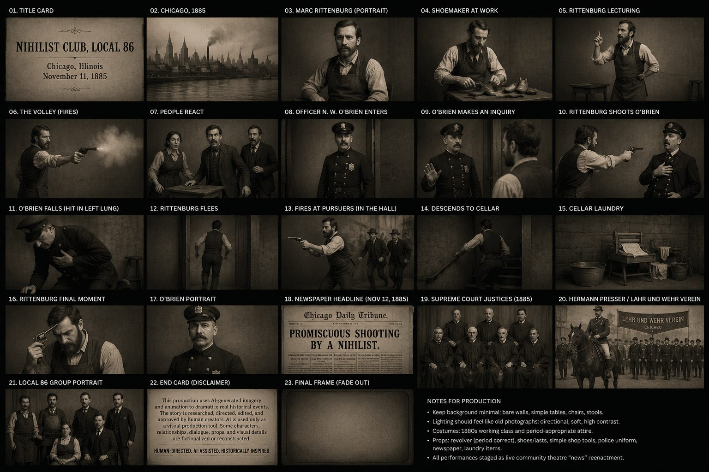
Chicago, 1885 · Project evolution
How a historical mini-documentary became a research-and-reconstruction trail
Source → Evidence → Creative Decision → Disclosure
“How did you arrive at those choices?”
This presentation answers the process question behind the film:
The goal was not just to make convincing images — it was to keep a visible trail of what was documented, inferred, and dramatized.
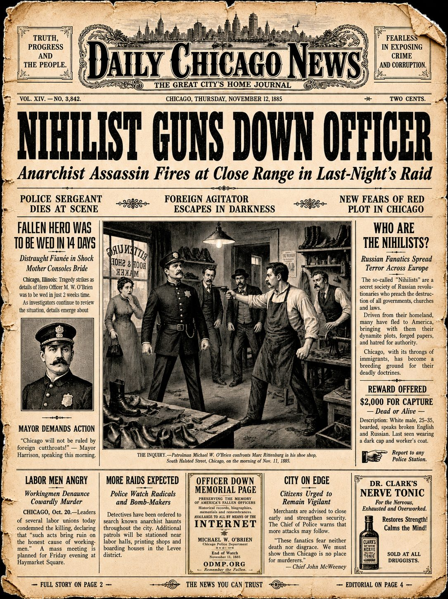
Nihilist Club, Local 86 • project evolution • 2
A small incident placed beside a much larger American question
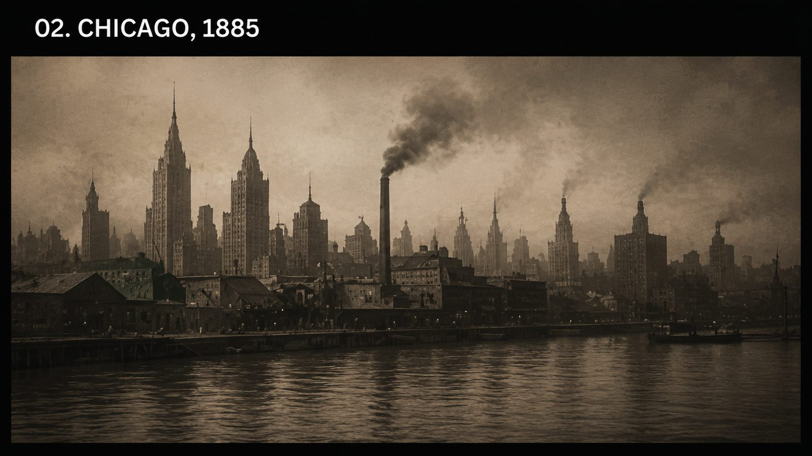
Marc Rittenburg, a shoe shop, gunfire, and Patrolman Michael W. O’Brien.
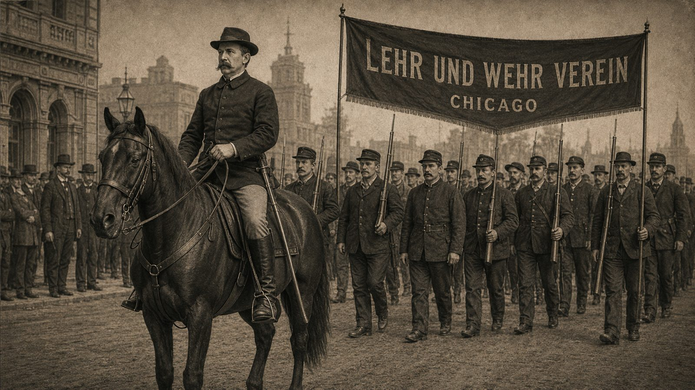
Presser v. Illinois: a separate Chicago case about armed private organizations and public order.
The film treats the connection as a historical parallel — not a documented causal link.
Nihilist Club, Local 86 • project evolution • 3
A repeatable rule for every visual choice
What record, image, article, memorial page, or archive item started the choice?
What specific details can be carried forward with confidence?
What must be reconstructed because the record is incomplete?
How will the audience know what is documented versus dramatized?
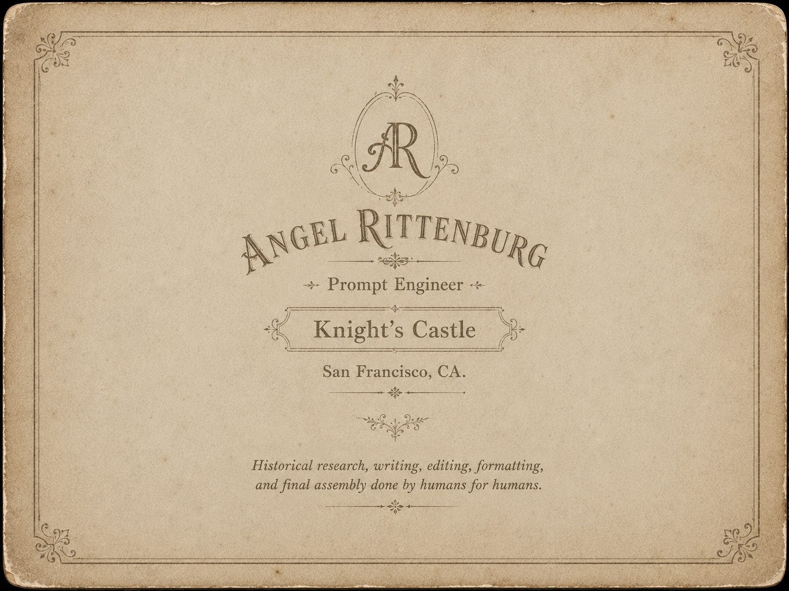
Nihilist Club, Local 86 • project evolution • 4
A documented person, a reconstructed appearance
Spelling rule for this project: RITTENBURG = B‑U‑R‑G
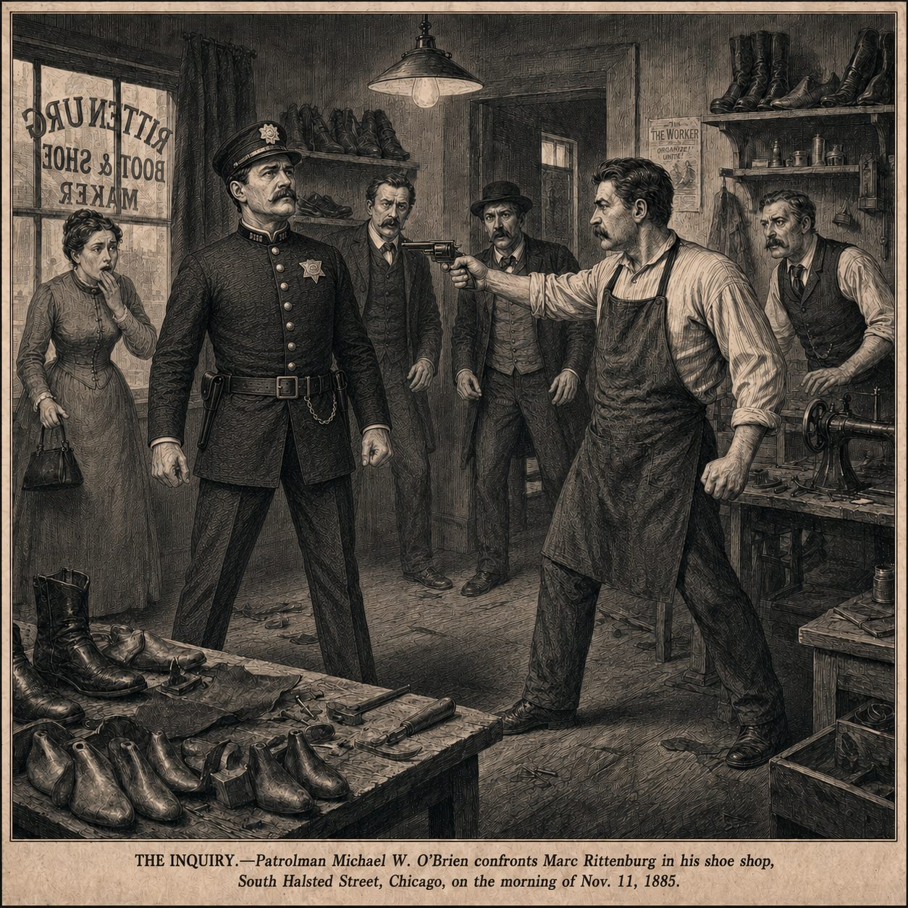
Nihilist Club, Local 86 • project evolution • 5
From “an officer” to Star 389
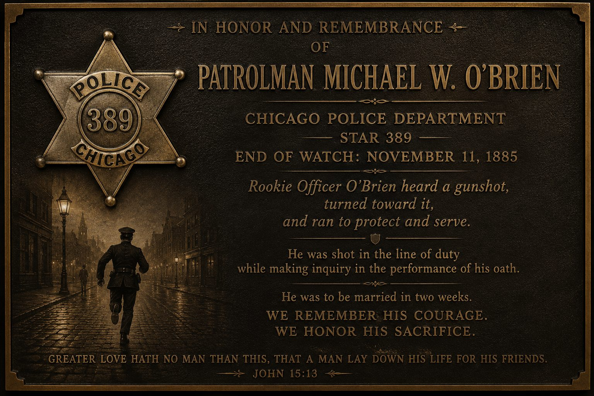
The research changed the film’s emotional center.
The officer became identifiable as Patrolman Michael W. O’Brien, Chicago Police Department, Star 389, End of Watch: November 11, 1885.
Because no verified portrait was found, the tribute emphasizes the documented service details and the action: he heard gunfire and went to investigate.
Ethical choice: honor the documented service without inventing a “memorial portrait” as fact.
Nihilist Club, Local 86 • project evolution • 6
Even when the subjects are unidentified
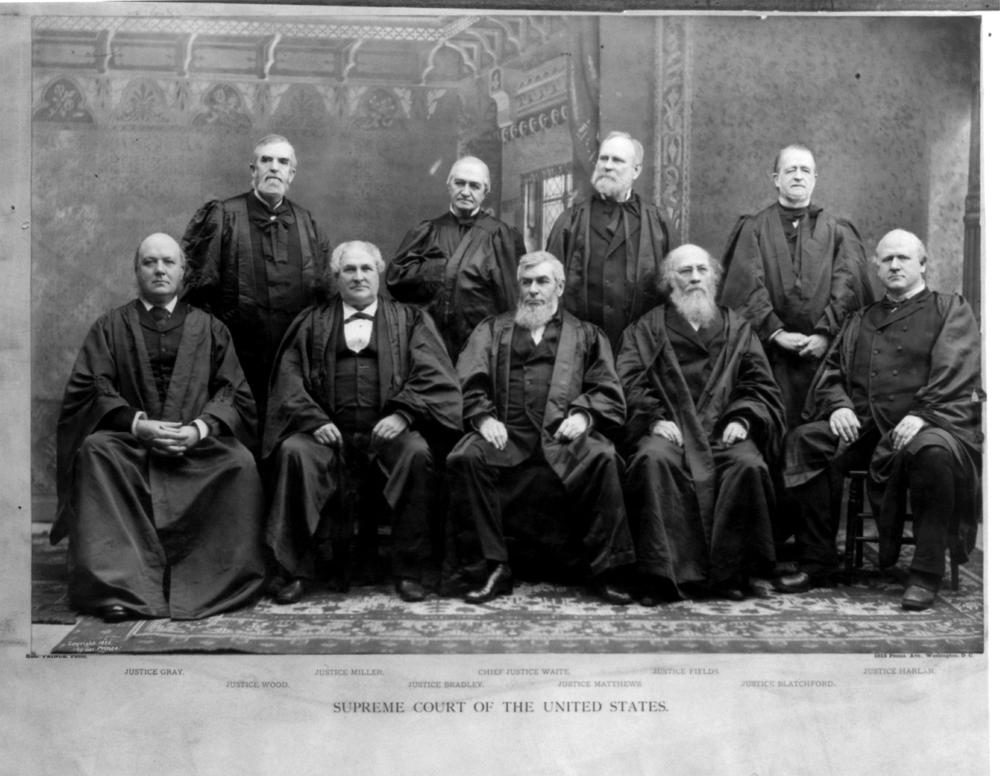
Library of Congress sources helped guide period posture, photographic conventions, and source-credit practice.
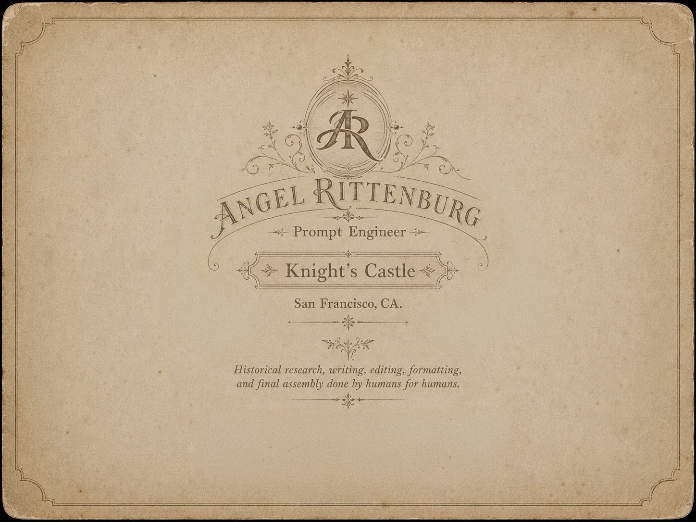
A key principle emerged: unidentified people should still be credited as people, not treated as anonymous stock.
Nihilist Club, Local 86 • project evolution • 7
The audience should know what kind of claim each image is making
Documented
Names, dates, locations, O’Brien’s Star 389, the shooting sequence, and Presser v. Illinois as a separate Supreme Court case.
Reconstructed
Costumes, body language, shoe-shop environment, badge/star details, and period visual staging.
Dramatized
Local 86, composite characters, fictional newspaper layouts, and “live community theatre news” performance style.
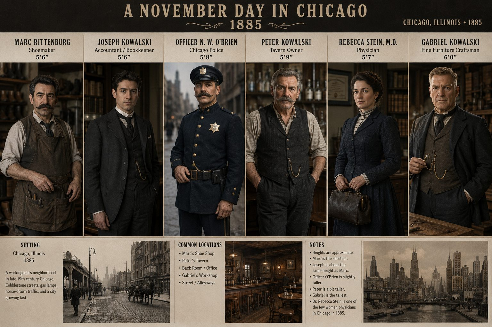
Nihilist Club, Local 86 • project evolution • 8
Better evidence revised the story instead of being forced into it
A good reconstruction changes when the research improves.
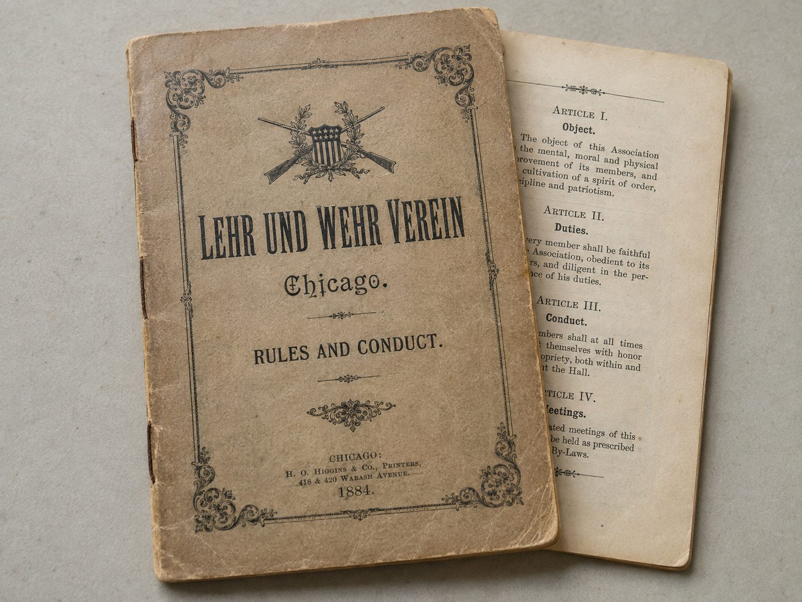
Nihilist Club, Local 86 • project evolution • 9
Human-directed. AI-assisted. Historically inspired.
| Tool | Role in production |
|---|---|
| Meta.ai | Major tool for colored postcard-style imagery and some still concepts. |
| ChatGPT / OpenAI | Research support, writing, prompt development, still-image generation, and image enhancement. |
| MidJourney | All motion-picture sequences, using stills generated in ChatGPT/OpenAI or Meta as inputs. |
| Human role | Research selection, writing, editing, formatting, assembly, approval, and final judgment. |
Final disclosure principle: never let a beautiful reconstruction pretend to be a primary source.
Nihilist Club, Local 86 • project evolution • 10
Source → Evidence → Creative Decision → Disclosure
Angel Rittenburg • Chicago, 1885 project